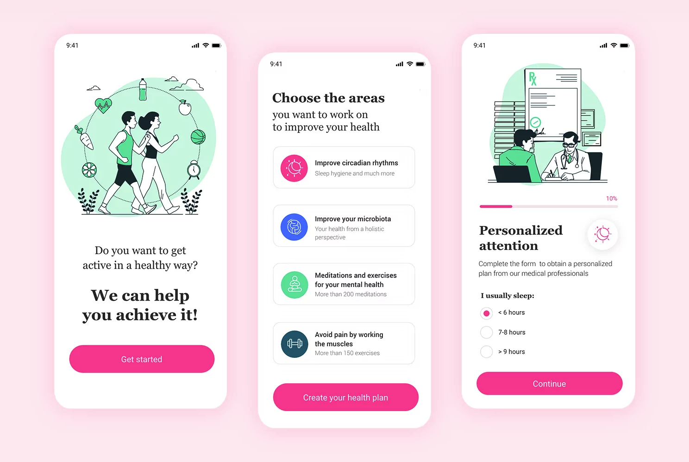
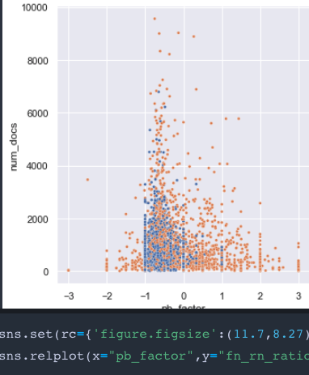

As a programmer, I now feel confident that I can teach myself anything - all I need is a cup of coffee, my laptop and a good playlist (make it 90s pop and maybe some japanese speed-metal and noise-rock). My greatest strength is my passion for learning and my persistence in overcoming challenges. What I am looking for is an inspiring team of developers that is willing to give me responsibilites to push my abilies further and enable me to learn the industry-skills I need for my developer journey. I spent the last 4 years immersed in the joy of computer science and math. But, I also feel connected to the humanities and the arts. Before I entered CS, I completed a Bachelor of Arts in social sciences and wrote my thesis on the topic of technology use for social services. If you read this far, you must really be interested in me! In that case: Let's connect!
Android App Project
I am currently developing an andorid app for students of my university. Features will be: managing courses and meal plans, as well as a chat function. Progress will be posted here shortly.
Natural Language Processing
Social media platforms are playing an increasing role in the spread of information and opinion formation on socio-political topics. This is especially relevant for polarizing topics, with highly factionalized chat groups forming around shared narratives and often proliferating misinformation (Cinelli eta al 2021). These groups can serve as echo-chambers with the effect of further escalating political polarization of their users, resulting in increasingly extreme views.
My project seeks to use natural language processing techniques on social-media posts in order to predict extremity of political partisanship and tests it’s generalizability for predicting the intensity of opinion on a set of socio-political topics. It will consist of a research component, i.e. literature review and testing of the transferability of existing findings, as well as the implementation of a machine learning model. The project will be supervised by the research group CAISA Lab. Progress will be posted here shortly.
Java
Over 4 years experience. Extensive knowledge of OOP concepts and design-patterns. Focused on testing-driven approach using Mockito, JUnit and more.
Python
Knowledge of basic concepts, plus experience using Numpy and Pandas. Participated in a machine-learning hackathon using Python as main langauge.
Android
Currently am building an Adroid App from ground up.
Functional Prog.
Ran a weekly tutorial at Marburg University, teaching the Scheme dialect Racket and general functional programming concepts.
Web Dev
Skills in HTML, CSS and basic JavaScript. Experience hosting personal website using Apache HTTP Servers.
RStudio
Able to apply appropriate statistical tests in RStudio (Fisher, Wilcoxon, Chi-Square etc.) and visualize results with Shiny and ggplot.
C Language
Basic experience Programming in C. First language I learned, when first starting to learn programming. Got a little rusty...
PostgreSQL
Solid skills in SQL, as well as understanding of database-theory (relational algebra, normalforms etc). Basic experience using JDBC API.
Machine Learning
Used machine learning libraries like sklearn and TensorFlow to fit models performing face-recognition, predicting housing prices etc. Used Matplotlib for visualization.
Git
Extensive experience using git and gitHub for version-control.